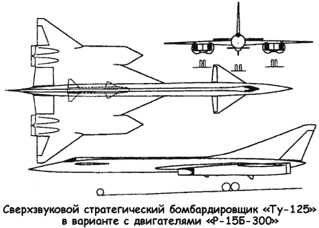
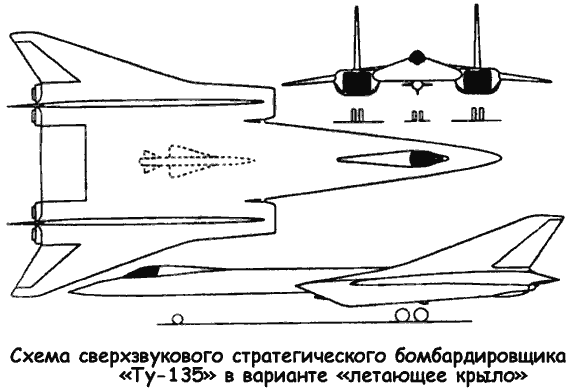

Сверхзвуковые тяжелые самолеты Андрея Туполева
В 1958 году в ОКБ-156 Андрея Туполева начались научно-исследовательские работы по созданию перспективного дальнего сверхзвукового ударного самолета, который в будущем должен был заменить «Ту-22».
Ставилась задача создания боевого самолета с дальностью полета на в несколько тысяч километров и максимальной скоростью порядка 2,5–3 Маха. Проект, которым в ОКБ занимался отдел Сергея Егера, получил обозначение самолет «125» («Ту-125»). Предварительные расчеты показали, что для обеспечения высоких летных характеристик необходимо обеспечить высокое значение аэродинамического качества на сверхзвуковом режиме полета. При нормальной взлетной массе самолета порядка 100–125 тонн, требовалась силовая установка с суммарной взлетной тягой не менее 40 000 килограммов и с удельными расходами топлива на сверхзвуковом крейсерском режиме значительно меньшими, чем у двигателей «ВД-7М», использовавшихся на «Ту-22».
Поскольку самолет «Ту-125» должен был совершать длительный крейсерский полет на больших сверхзвуковых скоростях, то неизбежно вставал вопрос о применяемых материалах, так как конструкция из традиционных алюминиевых сплавов уже не удовлетворяла условиям «теплового барьера», с которым самолет должен был столкнуться в полете.

Речь шла о применении традиционных сплавов в сочетании со сталью и титаном в наиболее нагруженных и напряженных в тепловом отношении элементах конструкции. Требовалось создать целый комплекс сложнейших систем оборудования и вооружения, способных обеспечить высокую эффективность применения ударной авиационной системы в условиях дальнего сверхзвукового полета.
Проект самолета «Ту-125», относящийся к 1958 году, имел два двигателя «НК-6» или «НК-10» конструкции Николая Кузнецова, с максимальной взлетной тягой 2350024000 килограммов, установленных под крылом в хвостовой части фюзеляжа в двух мотогондолах. Схема самолета — «утка», крыло — треугольное с мощным наплывом в центропланной части, максимальная скорость полета — 2700 км/ч, практический потолок — 25 километров и дальность полета — 7000 километров.
С 1958 года, под тем же шифром, что и самолет «135» («Ту-95С»), в ОКБ-156 начались инициативные работы по стратегической ударной авиационной системе, близкой по своим проектным параметрам к «М-56» Владимира Мясищева.
До осени 1960 года работы по теме «135» не выходили за рамки поисковых исследований; было подготовлено несколько предварительных проектов стратегического сверхзвукового самолета, в основном повторявших варианты проектов по американскому «ХВ-70». 3 октября 1960 года вышло постановление Совета Министров СССР № 1057-437, согласно которому ОКБ Мясищева передавалось в качестве филиала в ОКБ Челомея и освобождалось от проектирования и разработки сверхзвукового самолетаносителя «М-56»; ОКБ Туполева, в связи с прекращением работ по «М-56», должно было в треххмесячный срок дать предложения по созданию дальнего сверхзвукового самолетаносителя и дальнего сверхзвукового самолета-разведчика с рассмотрением возможности серийной постройки их на заводе № 22 в Казани.

В рамках этой работы, получившей по КБ обозначение самолет «135» («Ту-135»), было рассмотрено большое количество проектов создания авиационно-ракетных и разведывательных стратегических систем на базе различных вариантов сверхзвуковых дальних самолетов. В течение почти пяти лет была проведена большая работа по обоснованию и выбору основных параметров системы и самолета-носителя. Были проработаны десятки вариантов проектов самолета «135» с реализацией большого количества аэродинамических компоновочных решений под различные типы двигателей. В ходе проектирования исследовался и творчески перерабатывался опыт проектирования дальних стратегических сверхзвуковых самолетов, включая материалы Мясищева и разведданные по американскому стратегическому носителю «Валькирия».
Для самолета «Ту-135» рассматривались следующие типы двигателей: «НК-6» (максимальная взлетная тяга — 2300023500 кг), «НК-6Б» (22480 кг), «НК-6В» (18700 кг), «НК-6С» (22500 кг), «НК-10» (24000 кг), «Р15Б-300» (15000 кг), «Р23-300» (21000 кг), «ВД-19Р» (13500 кг), «Р17-117» (17000 кг). Число двигателей, в зависимости от величины их тяги, менялось от четырех до шести. Рассматривался также вариант самолета «Ту-135» с ядерной силовой установкой.
В ходе работ по выбору оптимальной аэродинамической схемы самолета было изготовлено 14 моделей «Ту-135», на которых в ЦАГИ были проверены шесть вариантов схем крыла, более десяти вариантов расположения двигателей. На пяти вариантах определялся оптимальный профиль крыла На шести вариантах — взлетно-посадочные характеристики и общие характеристики на дозвуковых скоростях. На моделях выбирались органы управления, характеристики устойчивости и управляемости. Отрабатывалась форма и расположение мотогондол, воздухозаборники, сопла, форма каналов подвода воздуха к двигателям, исследовалось взаимное влияние двигательных гондол, крыла и фюзеляжа В результате работ по оптимизации самолета для него была выбрана схема «утка» с плавающим передним горизонтальным оперением, треугольным крылом с переменной стреловидностью по передней кромке, одним килем и разнесенными по размаху крыла спаренными мотогондолами.
Отдельно изучался вопрос создания системы ракетного вооружения на базе крылатых ракет различного назначения и баллистических ракет воздушного базирования. Много внимания уделялось формированию навигационно-пилотажного и прицельного комплексов, бортовой аппаратуре радиоэлектронного подавления на основе новейших достижений.
В результате проектирования ударно-разведывательной системы «Ту-135» в ОКБ были выработаны основные положения концепции создания стратегического самолета-носителя и системы на его базе. Основные моменты ее были следующие.
Максимальная скорость полета самолета ограничивалась величиной 3000 км/ч (2,82 Маха), а крейсерская скорость — 2500–2650 км/ч (2,35-2,5 Маха). Это позволяло использовать в конструкции самолета дюралевые сплавы, с применением только в некоторых нагруженных элементах теплостойких сплавов и материалов, что позволяло использовать привычные и отработанные технологии и производственную базу серийных авиационных заводов без их существенной переделки и сокращало сроки проектирования и производства как минимум в два раза. Силовая установка самолета должна была базироваться на двухконтурных (турбовентиляторных) двигателях типа «НК-6». Это обеспечивало получение дальности полета большей на 10–20 % на основных сверхзвуковых режимах полета и на 30–40 % на смешанных и дозвуковых режимах, по сравнению с другими типами предлагавшихся двигателей, и возможность длительного полета на малых высотах. Кроме того, использование «НК-6» позволяло иметь силовую установку, однотипную с самолетами «Ту-22 2НК-6» (самолет «106»), а также обеспечивало дополнительный эффект от применения модификаций «НК-6» или его основных агрегатов для силовых установок самолетов гражданского назначения, а также для проектов самолетов вертикального взлета и посадки.
На основании большого объема исследований и анализа предложенных вариантов самолета «Ту-135» для дальнейшего проектирования был выбран вариант со следующими размерностями: длина самолета — 50,7 метра, высота самолета — 10,7 метра, размах крыла — 34,8 метра, площадь крыла — 400–450 м2, взлетная масса — 160–200 тонн. Выбранные размерности обеспечивали: получение нормальной практической дальности полета на сверхзвуковом крейсерском режиме (2650 км/ч) — 8000 километров, максимальной практической дальности полета — 10 000 километров и дальности с одной дозаправкой топливом в полете — 12 000 километров.
В случае создания на базе ударного самолета «Ту-135» его пассажирского варианта (самолет «135П») подобная машина могла бы обеспечить практическую дальность полета на сверхзвуке — 6500 километров (беспосадочный полет с территории СССР в США).
На основании требований ВВС по возможности эксплуатации тяжелых самолетов с аэродромов со слабым бетонным покрытием или с грунта самолет «Ту-135» должен был оборудоваться многоколесным или лыжно-колесным шасси.
Это позволяло использовать самолет при взлетной массе 160 тонн с аэродромов 1-го класса и с грунтовых аэродромов улучшенного типа. В перегрузочном варианте при взлетной массе 200 тонн — с внеклассных аэродромов или с усиленных полос аэродромов 1-го класса.
Работы по самолету «Ту-135» не замыкались лишь только на получении высокоэффективного ударного носителя, речь шла о создании многоцелевой системы, способной решать широкий круг оперативно-стратегических задач на базе одного базового самолета. Когда в начале 60-х годов Никита Хрущев сделал ставку на полный отказ от пилотируемых стратегических бомбардировщиков в пользу баллистических ракет, он не рискнул выступить напрямую против патриарха советской авиации Андрея Туполева и остановить тему «135». ОКБ-156 было предложено проработать возможность увеличения крейсерской скорости полета «Ту-135» до 3000 км/ч, как у «ХВ-70».
Одновременно, в противовес Туполеву, задание на однорежимный самолет для борьбы с авианосными ударными группировками получили «истребительные» КБ Павла Сухого (проект «Т-4») и Александра Яковлева (проект «Як-35»).
В июле 1962 года состоялся Научно-технический совет, на котором подводились итоги этого конкурса. В процессе обсуждения предложений проект самолета «Ту-135» был подвергнут серьезной критике. Туполев понял, что его бомбардировщику грозит быть «отправленным в корзину» и поэтому дал команду своему конструкторскому бюро о подготовке под условия конкурса проекта самолета «Ту-125».
Варианты самолета «Ту-125» начала 60-х годов в общих чертах повторяли компоновочные решения, принятые для самолета «135». В зависимости от выбранного типа двигателей их число менялось от двух до четырех (2 X «НК-6» или «НК-10», 4 X «Р-15Б-300» и так далее). Однако КБ не имело достаточно времени на проработку «Ту-125» под условия конкурса…
На втором Научно-техническом совете в сентябре прошло обсуждение проектов авиационными институтами и военными. Представленный проект самолета «Ту-125» не прошел конкурса из-за своей непроработанности. Сыграли роль также и технические и технологические сложности, связанные с созданием систем оборудования и вооружения самолета «125». Тем не менее работы по проектированию самолета «125» продолжалось до середины 60-х годов, когда взгляды на системы авиационных стратегических вооружений склонились в пользу дальнего многорежимного ударного самолета, реализацией чего стало создание многорежимного бомбардировщикаракетоносца с крылом изменяемой стреловидности «145» («Ту-22М»).